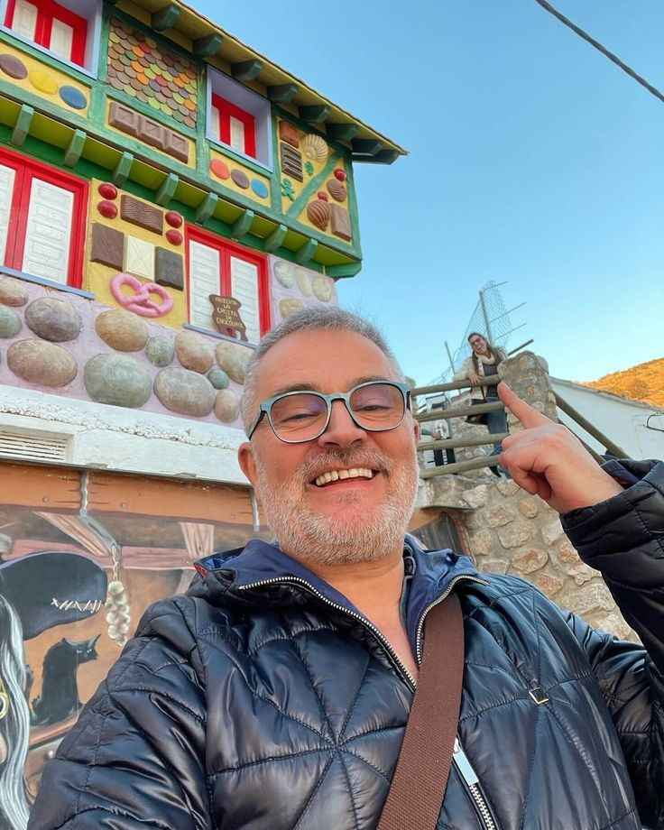

Jean-luc Moreau
@jeanluc.moreau70
Fui com amigos e todos amamos! A sopa de cebola gratinada estava incrível. Recomendo a todos que visitam Paris.
Camille Dupont
@camilledupont_ofc
Uma experiência maravilhosa! O Coq au Vin estava perfeito e a atmosfera do restaurante é encantadora. Voltarei com certeza.
Louis Berned
@berne_louisofficiel
O atendimento foi impecável e o ambiente é super acolhedor. Os macarons de sobremesa são um must-try!

Antoine Antetokoumpo
@koumpo.antoine23
O Le Clairmont é o lugar ideal para um jantar romântico. A comida é deliciosa e a decoração é linda. Adorei cada momento!
FEEDBACKS
A satisfação dos nossos clientes é nossa maior recompensa. Estamos sempre buscando maneiras de aprimorar nossa experiência gastronômica, e os feedbacks que recebemos nos ajudam a crescer e a oferecer o melhor. Veja o que nossos clientes têm a dizer!